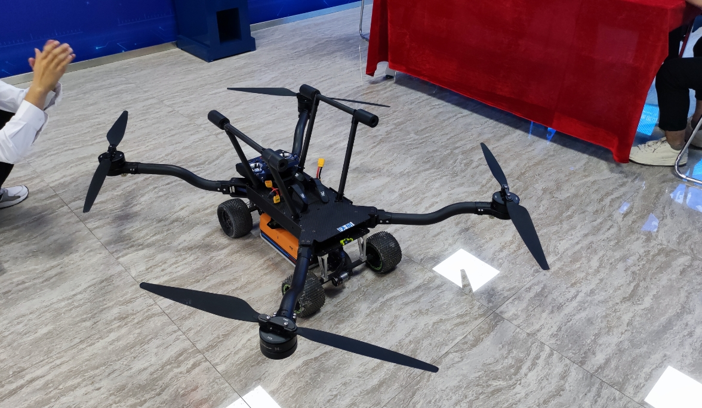
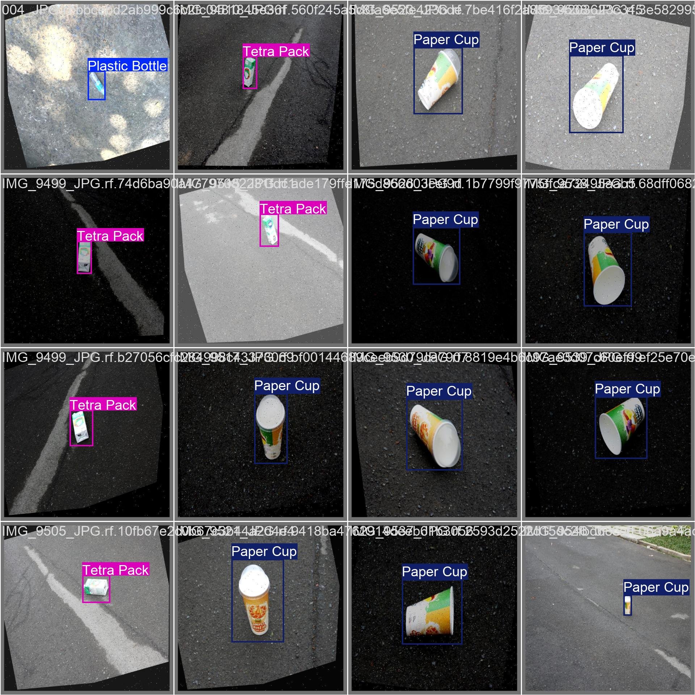
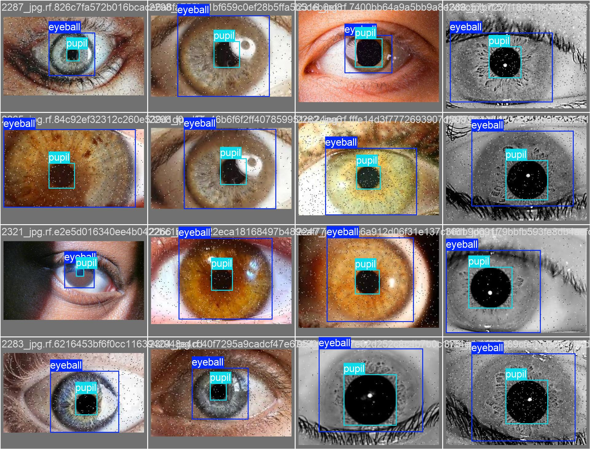

Hongming-Intelligent-Technology
|
GitHub |
Contact Us
|
Focused on research and practice in the field of intelligent technology, we are
dedicated to cutting-edge technology R&D and project implementation. Our core
areas include:
Organization Positioning: Committed to promoting open-source collaboration and industrial implementation of intelligent technology, providing high-quality technical solutions and project references for developers, researchers, and enterprises. Contact Email: Lanyi_adict [AT] outlook.com |
Core Projects |
|
 |
Project Description: Based on the anti-gravity negative pressure design concept, this project develops an adsorption-type tunnel inspection robot. Combined with the YOLO11 concrete quality defect management platform, it realizes full-automated management of engineering projects. The robot can stably perform adsorption operations in special scenarios such as tunnels, accurately identify concrete defects, and complete inspection, data recording and analysis without manual intervention, significantly improving the efficiency and safety of tunnel construction quality control. |
|
 |
Project Description: This is an industrial-grade robot swarm scheduling platform built on the Flask framework. The system integrates a deeply customized YOLO11 detection architecture, significantly improving the accuracy and real-time performance of waste identification in complex environments. Through a self-developed spatial map parsing algorithm, it achieves digital mapping and efficient management of work paths. Furthermore, the platform incorporates machine learning prediction models, enabling precise early warning and resource pre-allocation for high-risk environmental pollution areas through in-depth mining of historical data. |
|
 |
Project Description: This project fully replicates the GazeTrak acoustic eye-tracking system, achieving seamless integration of acoustic signal processing and a deep learning gaze estimation model. Addressing the limitations of the original system, an improved data processing scheme and model training framework are proposed. Evaluations demonstrate that this improved scheme effectively enhances the system's performance under complex interference conditions. |
About Us |
|
Hongming-Intelligent-Technology
focuses on innovation and practice in the field of intelligent technology, bringing
together a group of technology enthusiasts and professional developers from
universities and enterprises. Adhering to the concept of open-source sharing, we
promote the popularization and application of intelligent technology in various
industries through project R&D, technical exchanges, and community building.
Our target audiences include:
- Enterprise teams seeking technical solutions; - University faculty and students conducting relevant research; - Open-source contributors passionate about intelligent technology; - Startup teams exploring technology implementation. Welcome to follow our GitHub repository, participate in project contributions, or contact us through official channels for technical cooperation and exchanges. |
Website Template adapted from here and here | All Rights Reserved © Hongming-Intelligent-Technology |